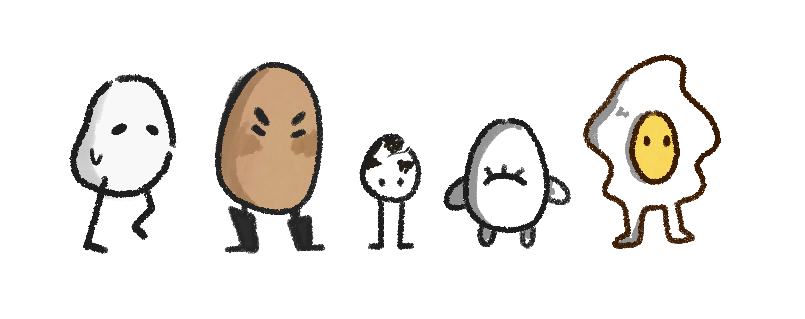
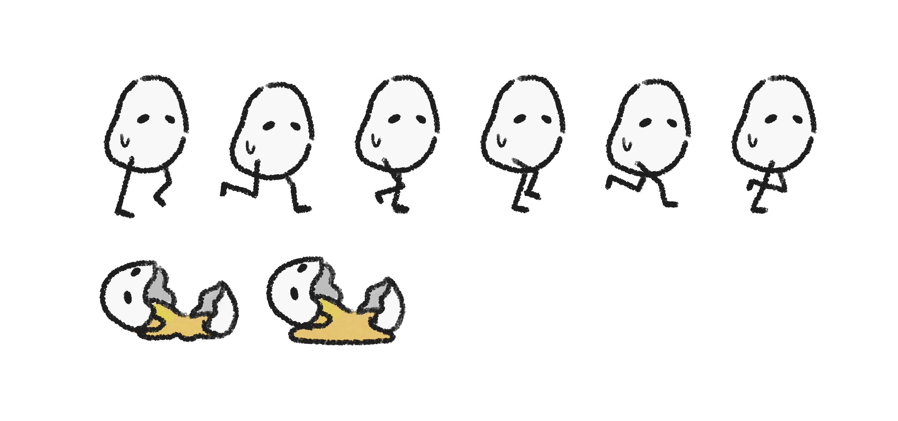
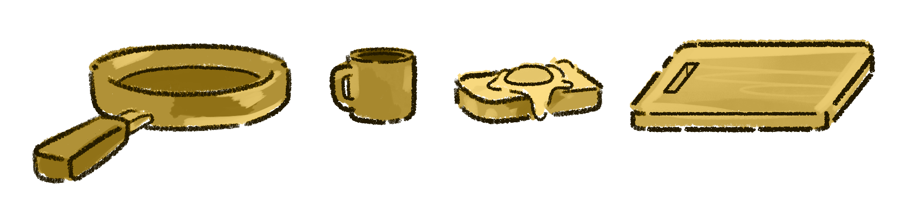
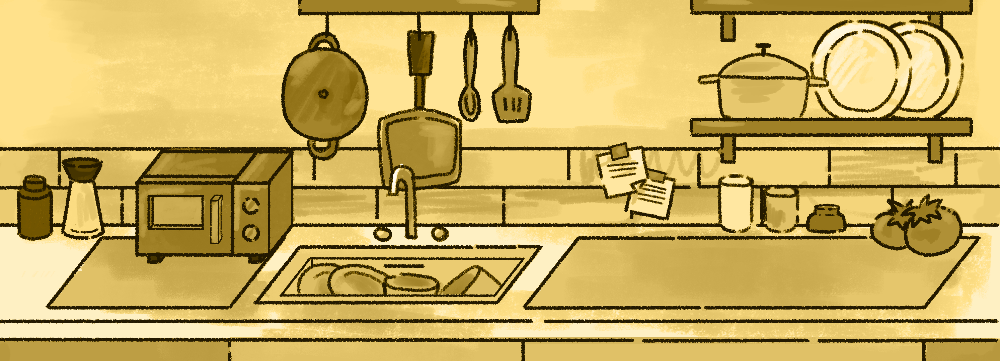

✦
Eggtrellado es un juego endless runner con temática humorística donde encarnas a un huevo que intenta escapar de una "cocina infernal" antes de convertirse en desayuno.
✦
El objetivo era explorar diferentes personalidades que funcionaran con la idea del juego.
Se ilustraron las diferentes animaciones necesarias para su funcionamiento dentro del juego.
Ciclo de carrera animado en 6 frames.
Se diseñaron obstáculos que se mezclan bien con el fondo para confundir al jugador.
Una cocina cálida que no concuerda con el terror que siente el Huevito.
